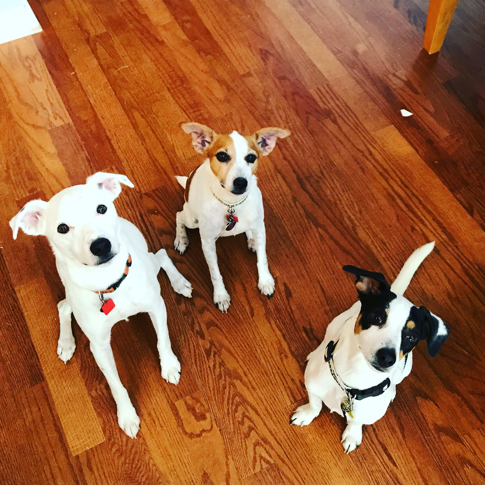

About Me
Professional
My name is Brandon Haley and I am currently a manager at a cloud hosting company reponsible for ensuring all of our clients' applications and databases are implemented and maintained for a seamless app streaming experience. One of the many notable challanges the team faces day to day is scaling our app install and update deployments across the client base efficiently. As a result, it is imperative we develop automated solutions to deploy simple and/or complex application procedures to attain speed and consistency. I have in-depth scripting experience within the Microsoft Windows environment, leveraging languages such as CMD, PowerShell & AutoIT.
Scripting/Programming has been one of my passions I wanted to pursue for a long time and I am fully invested into learning the ins-and-outs of what a developer is and does. As a Manager, I miss the technical process of solving problems and tapping into my creative abilities. I am taking this bootcamp to tap into my passion for coding and eventually open new developer opportunities that allow me to get back into the technical role, or a hybrid non-technical role. My current goal would be to eventually become a DevOps manager after I have gained the needed confidence of a developer.
Private
In my private life, I am married to my wife Melissa (pictured above) and we are proud parents of three fur-babies🐕🐕🐕 (pictured right) who keep us busy. We live in Sugar Hill, Georgia which is where I have lived my whole life. In our spare time, we are avid tennis players, foodies and love to travel the world in search of beautful landscapes. Some countries we have explored thus far: Iceland, Norway, Sweden, Spain, Costa Rica and Thailand. We are planning to explore New Zealand, Switzerland and Germany in the future. One interesting fact about me is that I used to DJ in Atlanta and was involved in the music scene. My favorite aspect of music was the technical process of creating tracks which unto this day is still a skill I am learning and has been one of the most difficult challenges I have faced.
I am very excited to learn how to code and to become a part of a development team.